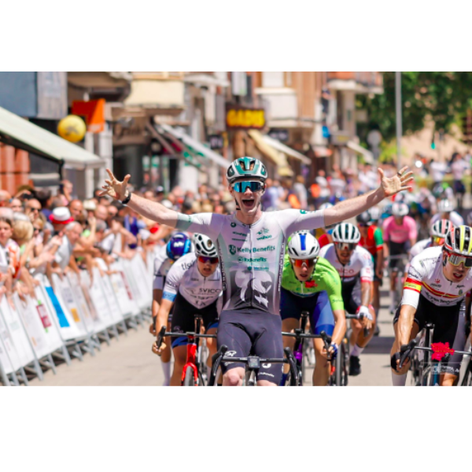
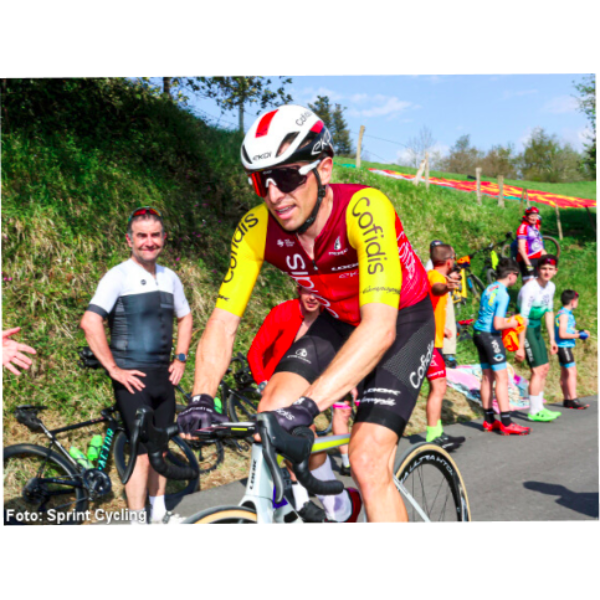

Noticias

🏆 Talento UNIR en el Ciclismo Nacional
Nuestros estudiantes destacan en las competencias regionales, demostrando que la disciplina deportiva y la excelencia académica van de la mano. + info

Egan Bernal inspira a la nueva generación Ziklounir
El campeón del Tour de Francia envía un mensaje de motivación a nuestro club, destacando la importancia de las rutas seguras y la formación técnica en Colombia. (30/10/2025) + info
🚲 Gran Fondo UNIR Colombia 2026: El Eje Cafetero nos espera
El Club Universitario UNIR anuncia la primera edición del Gran Fondo en Colombia. Una ruta épica que conectará a nuestra comunidad universitaria a través de los paisajes más emblemáticos del Quindío... (15/11/2025) + info